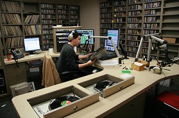

The Classical Station (89.5 FM)
"Bringing you the best classical hits in the Northeast."
Welcome!!
Welcome all classical enthusiasts! This webpage is home to WCCM The Classical Station. Here we strive to bring you the absolute best classical music ranging from Palestrina's elegant madrigals, Bach's complex contrapuntal pieces, Hyden's enthusiastic symphonies to Chopin's elegant piano sonatas. WCCM is proud to provide all of it's listeners with the most diverse classical lineup in Northwest Connecticut.
What do we do?
In addition to serving classical music, we also sponser numerous events and activities to promote cultural enrichment and understanding of music. Please check our website often to be informed and updated with the lastest developments. We also give away free tickets for concerts, showcase classically renowned guest speakers, and provide interesting facts with every featured composer. We strive to bring you the best listening experience available!
Awesome Content
In addition to our awesome radio services, we have included an index of some of the most famous composers, their biographies, and famous classical pieces including multimedia and graphics elements. We have a glossary too in case you need to bruch up on those ambiguous musical terms with links so you can easily navigate back and forth between sections. We hope to expand our current list of composers in the future, but for now we have a wide variety of composers to suit your needs.

Register! (You know you want to)
Also, please consider registering on our website so you can receive email updates regarding special events and time slot changes for our classical broadcasting. To register, you will also have to opportunity to purchase our monthly WCCM magazine issues. The magazine includes award winning content based around your favorite classical composers, performers, and directors. You can't find this content anywhere else.
Contact us
Lastly the contact section is where you can find a list of all current staff, their work emails, phone numbers, and office hours in case you have any problems or questions with anything. Send us a message through the "Contact Us" form if you have any questions about the website.